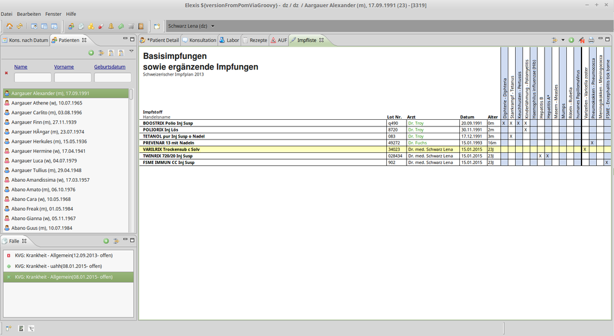
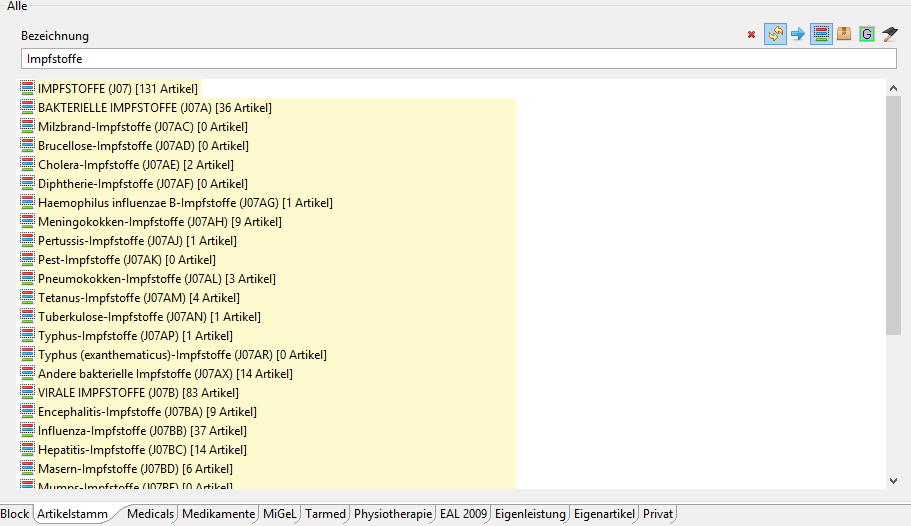
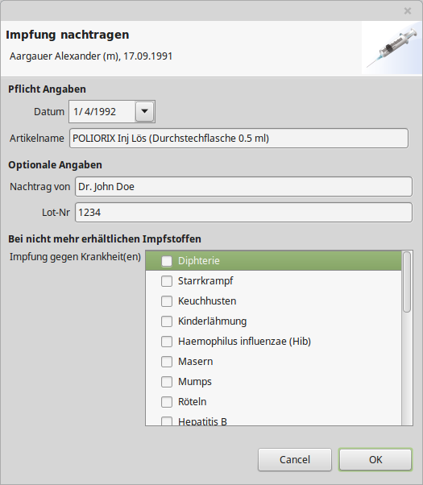
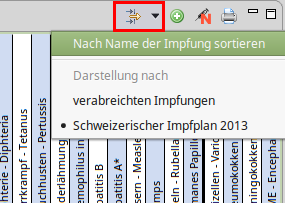
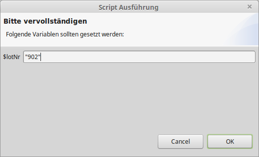
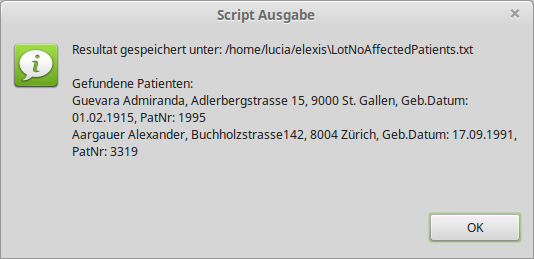
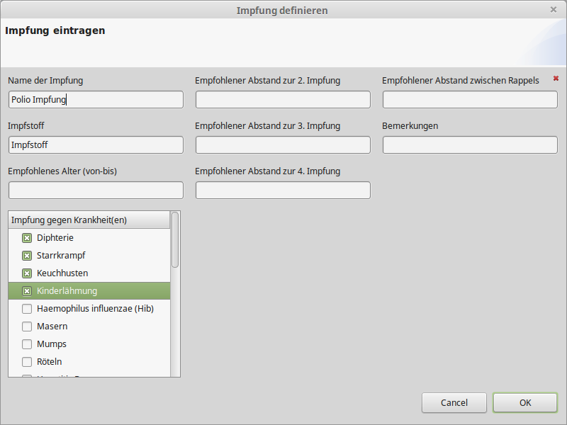
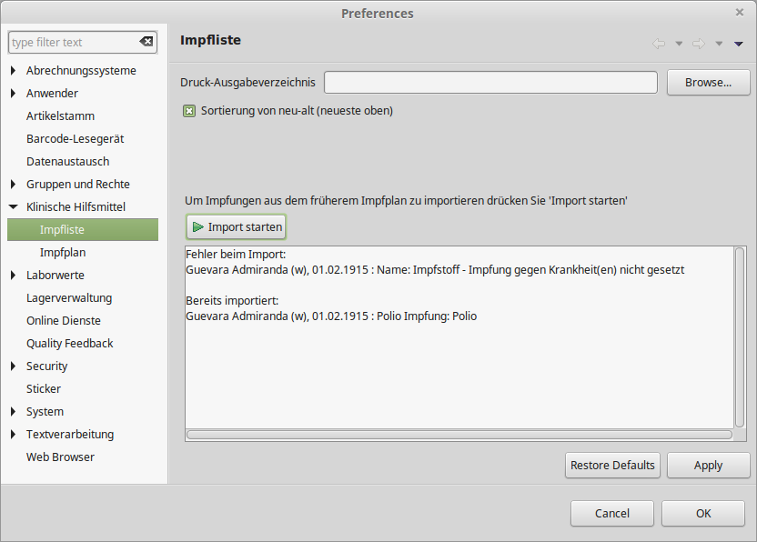

At.medevit.elexis.impfplan.feature.feature.group
| Version: | 3.0.1 |
| Kategorie: | Klinische Hilfsmittel |
| Beschreibung: | |
| Author: | |
| Letzte Bearbeitung: | 15. Jänner 2015 |
| Voraussetzungen: | Elexis 3.0 |
| Betriebssystem: | Windows, Mac, Linux |
| Lizenz: |
Contents
- 1 Impfliste
- 2 Einführung
- 3 Installation
- 4 Konfiguration
- 5 Verwendung
Impfliste
Bezeichnung: Impfliste (F. Marty)
Author: Lucia Amann <amann@medevit.at>
Version: 3.0.1, Jänner 2015
Beschreibung: Dieses Plug-In ermöglicht das Ein- und Nachtragen von Impfungen in Elexis.
Einführung
Mit dem Impfplan Plugin können Impfungen eines Patienten eingetragen und nachgetragen werden. Die Darstellung der Impfliste orientiert sich dabei am schweizerischen Impfplan 2013 und kann bei Bedarf ausgedruckt werden.
Installation
Um das Impfplan Plugin in Elexis verwenden zu können, muss aus der Kategorie „Klinische Hilfsmittel“ das Modul „Impfplan (F.Marty)“ abonniert werden. Nach dem Aktualisieren von Elexis ist das Modul geladen.
Konfiguration
- Für die Ausgabe der dargestellten Impfungen eines Patientens via PDF kann unter Datei/Einstellungen/Klinische Hilfsmittel/Impfliste eine Druck-Ausgabeverzeichnis definiert werden.
- Die Impfungen werden standardmässig nach dem Datum der Verabreichung sortiert. Je nach Bedarf kann definiert werden, ob von neu-zu-alt (neueste Verabreichung oben) oder umgekehrt sortiert werden soll.
Für Anwender, welche parallel das frühere Impfplan Plugin installiert haben
- In diesem Fall ist die Sektion zum Importieren von Impfungen aus dem früheren Impfplan aktiviert. Für nähere Infos zum Import siehe Punkt 3.7
Verwendung
Öffnen Sie die View Impfliste und selektieren Sie einen Patient. Es werden alle bisher vorgenommenen Impfungen angezeigt. Empfohlene Standardimpfungen sind all jene, welche sich vor der breiten schwarzen Linie befinden. 
Impfung Eintragen
Wenn einem Patienten eine Impfung verabreicht wird, kann diese über zwei Wege eingetragen werden.
Variante 1 Die Imfung wird direkt über die Konsultation verrechnet (dabei öffnet sich ein Dialog über welchen die Lot-Nummer eingetragen werden kann). Der Impfeintrag wird dadurch automatisch in die Impfliste eingetragen.
Variante 2 In der Impflisten-View kann über des grüne Plus der Artikelstamm geöffnet werden. Dort kann die gewünschte Impfung per Doppelklick hinzugefügt werden. Die Impfung muss einer Konsultation zugewiesen werden bzw. es kann automatisch eine neue Konsultation generiert werden. Nach Eintragen der Lot-Nummer, wird die Impfung in die Verrechnung aufgenommen und im Impfplan festgehalten. Bei Einträgen wird davon ausgegangen, dass der am System angemeldete Mandant die Impfung verabreicht hat. Grippeimpfungen werden grundsätzlich nicht im Impfbuch aufgeführt. Daher gibt es bei Grippeimpfungen keine Kreuze.
Tipp: Im Artikelstamm kann durch aktivieren des ATC basierten Filters nach Impfstoffen gesucht werden. Durch Doppelklick auf die gewünschte Impfstoffgruppe öffnen sich alle zugehörigen Artikel. Ein erneuter Doppelklick auf die Gruppe schliesst diese ansicht wiederum. 
Impfung Nachtragen
Eine Impfung kann über dieses Icon nachgetragen werden. 
- Pflicht Angaben
- Das Datum darf nicht vor dem Geburtsdatum des Patienten liegen.
- Artikel
- Noch erhältlicher Impfstoffe sollten mittels der Auto-Vervollständigung eingetragen werden
- Nicht mehr erhältliche Impfstoffe (nicht Teil des Artikelstamms) mit dem Namen der Impfung eintragen und den Bereich _Bei nicht mehr erhältlichen Impfungen_ ausfüllen
- Optionale Angaben
- Nachtragungen können auch von externen Ärzten stammen. Externe Ärzte werden auf der Impfliste grün dargestellt.
- Bei nicht mehr erhältlichen Impfungen (nicht durch Auto-Vervollständigung gefunden)
- In diesem Fall gilt es die Krankheiten gegen welche die Impfung dient anzukreuzen.
Ausdrucken/ PDF erstellen
Die Impfungsübersicht eines Patienten kann über das Drucksymbol als PDF ausgegeben werden.
Impfung löschen
Über einen Rechtsklick auf die gewünschte Impfung und aufrufen des Menüs _Eintrag löschen_ kann z.B. eine falsch eingetragene Impfung entfernt werden.
Darstellung der Impfungen
Die nachfolgenden zwei Unterpunkte sind im View Menü _Darstellung der Impfungen_ zu finden.

Nach Name der Impfung sortieren
Durch de-/aktivieren der Option _Nach Name der Impfung sortieren_ können die Impfungen der Impfliste statt nach Datum nah Name der Impfung sortiert werden.
Darstellen nach
Es kann definiert werden ob der _Schweizerischer Impfplan 2013_ oder alle _verabreichten Impfungen_ angezeigt werden sollen.
Alle Patienten welche eine Impfung mit Lot-Nummer XY erhalten haben suchen
Über ein Script können alle Patienten ermittelt werden, welche eine Imfpung mit einer bestimmten Lot-Nummer erhalten haben. Dieses Script kann in der Script View über Rechtsklick _Script ausführen_ gestartet werden und wird nach Eingabe der Lot-Nummer in Anführungszeichen (siehe Screenshot) ausgeführt.  Die Ergebnisse werden sowohl in einem Dialog ausgegeben als auch im Elexis Installationsverzeichnis unter LotNoAffectedPatients.txt gespeichert. 
Impfungen aus früherem Impfplan importieren
Schritt 1) Impfungen in früherem Impfplan anpassen Zuerst müssen die Impfungen aus dem Impfplan Plugin von G. Weirich angepasst werden. Hierzu unter Datei/Einstellungen/Klinische Hilfsmittel/Impfplan für alle aufgelisteten Impfungen die Krankheiten gegen welche sie dienen definieren.  Dieser Dialog kann per Doppelklick auf die entsprechende Impfung geöffnet werden. Schritt 2) Impfungen importieren Unter Datei/Einstellungen/Klinische Hilfsmittel/Impfplan kann nun der Import starten Knopf betätigt werden. Die Logausgabe dient zur Auskunft über Erfolg/Misserfolg des Imports. Bei Problemen beim Importieren wird der Grund, die Impfung und der zugehörige Patient angegeben. Bereits importierte Impfungen werden nicht noch einmal importiert! 